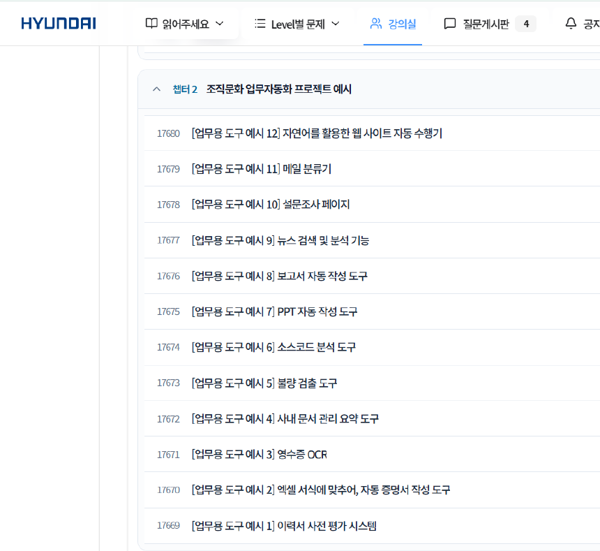
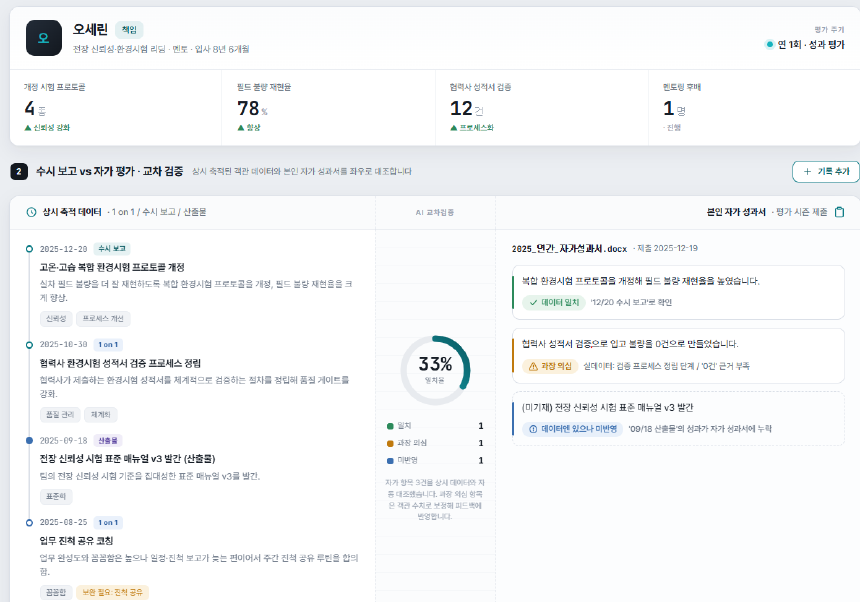

Module 5.
나만의 업무 혁신 PoC 설계
이 시간에 할 일
M5
오늘 배운 것 중 내 업무에 맞는 것 하나를 골라,
한 장짜리 개선안으로 만듭니다.
| 구분 | 내용 |
|---|---|
| Step 1 | 내 업무에서 반복되는 일 하나를 고릅니다 |
| Step 2 | 넣는 것 · 하는 일 · 나오는 것 세 칸으로 그립니다 |
| Step 3 | 한 장으로 정리합니다 — 문제 · 데이터 · 방식 · 효과 · 검증 |
| Step 4 | 서로 보여 주고 의견을 주고받습니다 |
| 마무리 | 오늘 배운 것 정리 · 내일 첫 행동 정하기 |
PoC — 작게 해 보고 판단하는 것
M5 · 개념거창한 기획서가 아닙니다. 되는지 작게 확인해 보는 실험입니다.
이런 건 PoC가 아닙니다
“우리 부서 전체 업무를 AI로 바꾸겠다”
“전사 시스템과 연동되는 플랫폼을 만들겠다”
너무 커서 시작할 수가 없습니다. 오늘 안에 확인되지 않습니다.
이런 게 PoC입니다
“매주 쓰는 회의록을 10분 만에 만들어 보겠다”
“설문 결과를 한 화면으로 보고 보고서까지 뽑아 보겠다”
작아서 이번 주에 해 볼 수 있습니다. 되는지 안 되는지가 바로 나옵니다.
오늘 배운 것 중에서 고릅니다
M5 · 개념새로 배울 것은 없습니다. 오늘 손으로 해 본 것이 전부 재료입니다.
H-Chat 프로젝트
반복업무 전용 작업공간
같은 일을 매번 같은 기준으로
CLAUDE.md
항상 적용되는 공통 기준
우리 팀 양식 · 말투 · 금지사항
Skill
필요할 때 불러 쓰는 레시피
자주 쓰는 절차를 명령어 하나로
Subagent
업무 분담
긴 일을 나눠 맡겨 정확하게
대시보드
반복 확인 화면
매번 열어 보는 자료를 한 화면으로
업무도구(앱)
동료에게 건네는 프로그램
나만 쓰던 것을 팀이 함께
다른 사람들은 이런 걸 만들었습니다
M5 · 개념
교육 플랫폼 · 조직문화 업무자동화 프로젝트 예시
떠오르지 않으면 남의 것부터 봅니다.
- 영수증 OCR · 이력서 사전 평가매번 눈으로 확인하던 것을 대신 읽게
- 사내 문서 요약 · 메일 분류기쌓이기만 하던 자료를 정리하게
- 보고서 · PPT 자동 작성양식은 같고 내용만 바뀌는 일
- 설문조사 페이지 · 불량 검출M4에서 만든 것과 같은 결
작게 시작해서 여기까지 갑니다
M5 · 개념“수시 보고와 자가 평가를 대조해 본다” — 한 줄에서 시작한 것입니다.

① 흩어진 기록을 한 화면에 모아 대조

② 근거를 들어 초안까지 자동 작성
Step 1 — 무엇을 고를까
M5-1 · 개념“AI로 뭘 할까”가 아니라 “내가 매번 뭘 하고 있나”부터 봅니다.
반복
매일 · 매주 · 매달 같은 일을 또 한다
수작업
복사 · 붙여넣기 · 옮겨 적기가 많다
시간
한 번에 30분 이상 걸린다
[실습] 내 업무에서 하나 고릅니다
M5-1 · 실습- 평소 업무를 떠오르는 대로 적습니다
- 그중 반복 · 수작업 · 시간이 겹치는 것에 표시합니다
- 하나만 고르고, 아래 한 줄로 적습니다
이 한 줄이 Step 1의 결과입니다
[업무명] 을 매 [주기] 하는데, 지금 [N분] 걸린다
예시
“주간 회의록 정리를 매주 하는데, 지금 40분 걸린다”
고르지 말 것
한 번뿐인 일, 남의 일, 사내 기밀이 꼭 필요한 일.
Step 2 — 세 칸이면 충분합니다
M5-2 · 개념아무리 복잡해 보여도, 업무는 결국 넣고 · 하고 · 나오고 셋입니다.
넣는 것
매번 들어오는 자료
메일 · 엑셀 · 녹취 · 양식
하는 일
한 줄로
정리한다 · 요약한다 · 만든다 · 검토한다
나오는 것
손에 남는 것
회의록 · 보고서 · 화면 · 메일
[실습] 세 칸으로 그립니다
M5-2 · 실습- 넣는 것 — 매번 어떤 자료가 들어오는지
- 하는 일 — 그 자료로 무엇을 하는지 한 줄
- 나오는 것 — 끝나면 무엇이 손에 남는지
- 세 칸을 교육 플랫폼에 올립니다
막힐 때
“하는 일”이 두 줄 이상이면 아직 큽니다. 한 줄로 줄어들 때까지 잘라 내세요.
여기서 갈립니다
나 혼자 쓰면 자동화, 남에게 건네면 업무도구. 한 줄로 표시해 두세요.
Step 3 — 좋은 PoC의 네 가지 조건
M5-3 · 개념네 개 중 하나라도 빠지면 시작하고도 흐지부지됩니다.
작게 시작
이번 주에 해 볼 수 있는 크기인가
데이터 확보
지금 내 손에 있는 자료인가
효과 측정
몇 분이 줄었는지 셀 수 있는가
사람 검토
마지막에 사람이 확인하는가
[실습] 한 장으로 정리합니다
M5-3 · 실습아래 다섯 칸만 채우면 한 장짜리 개선안이 됩니다.
① 문제
무엇이 반복되고 얼마나 걸리는지 1~2줄
② 데이터
무엇을 넣을 것인지 1줄
③ AI 활용 방식
프로젝트 · CLAUDE.md · Skill · Subagent · 대시보드 중
④ 기대 결과
산출물 1종 · 몇 분이 줄어드는지
⑤ 검증 방법
어떤 지표로 · 누가 확인 · 언제
이름 · 부서
누가 제안했는지 남깁니다
Step 4 — 서로 봐 주는 세 가지 눈
M5-4 · 개념“좋네요”는 도움이 되지 않습니다. 세 가지만 봐 줍니다.
업무 효과
정말 시간이 줄어드는가
줄어드는 분이 눈에 보인다
“편해진다”만 있고 숫자가 없다
실현 가능성
이번 주에 해 볼 수 있는가
자료가 이미 내 손에 있다
남의 승인·시스템 연동이 먼저다
AI 활용
AI가 맞는 자리에 있는가
읽고 · 정리하고 · 초안 쓰는 일
판단과 책임까지 맡기고 있다
[공유] 서로 보여 주고, 의견을 받습니다
M5-4 · 공유- 몇 분이 1분씩 발표합니다문제 · 방식 · 기대 효과, 이 셋만
- 듣는 사람은 세 가지 눈으로 한 마디씩 답합니다
- 다른 사람 것을 보고 내 것을 고칩니다
왜 남의 것을 보나
내 업무만 보면 아이디어가 한 방향으로 갑니다. 남의 것에서 내 업무에 쓸 것이 나옵니다.
한 달 뒤
해 본 결과를 팀에 공유하기로 오늘 약속합니다.
내일 아침, 첫 행동 하나
마무리오늘 배운 것은 쓰지 않으면 사흘 안에 사라집니다.
카드에 한 줄만 적습니다
내일 아침, [무엇]을 [어떤 도구]로 10분만 해 보겠다
10분이면 되는 일부터 시작하는 사람이, 결국 끝까지 갑니다.
오늘 배운 것 — 한 줄 요약
마무리수고하셨습니다.
내일 아침, 10분부터 시작하세요